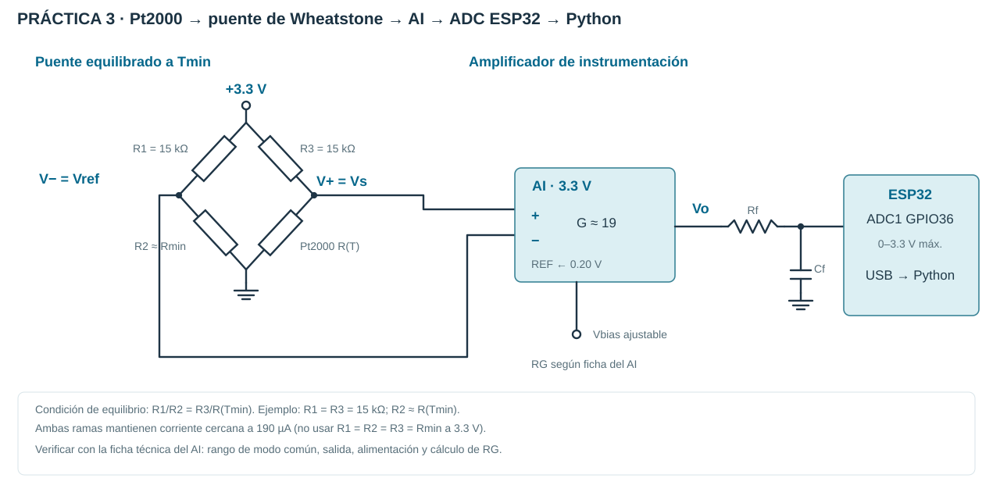

Práctica 3 · Termómetro Pt2000 con puente de Wheatstone
Implementación de un segundo instrumento con puente resistivo, acondicionamiento diferencial y análisis comparativo en Python.
Objetivos y secuencia
Equilibrar el puente cerca de 20 °C, medir su salida diferencial, implementarla como instrumento digital y comparar su desempeño contra la Práctica 2.
Clase 1 · 120 minutos
Análisis del puente de Wheatstone, equilibrio, voltaje diferencial, ganancia y comprobaciones eléctricas con multímetro.
Clase 2 · 120 minutos
Montaje, firmware, Python en modo PUENTE, adquisiciones y análisis de exactitud, dispersión y rango útil; comparación con divisor.
Fundamentos de ingeniería
1. Topología de cuarto de puente activo
Se propone un puente de dos ramas excitado con 3.3 V: rama de referencia (15 kΩ superior, 2.15 kΩ inferior) y rama Pt2000 (15 kΩ superior, Pt2000 inferior). La diferencia de voltajes mide el desequilibrio producido por temperatura.
2. Diferencia de tensiones
Un circuito con seguidores de entrada y amplificador diferencial entrega Vo = Vbias + G Vd. Como primer diseño se propone G≈19 mediante pares de 10 kΩ / 150 kΩ.
3. Digitalización e inversión
ESP32 transmite código y voltaje calibrado; Python deshace las etapas de acondicionamiento, estima Rx y obtiene temperatura.
Desarrollo progresivo · Diagrama de márgenes
Complete los valores de entrada y salida de cada bloque, siguiendo las diapositivas y la solución de los problemas. Determine primero los extremos de temperatura; después calcule la resistencia, el nodo resistivo, la diferencia, la salida acondicionada y la digitalización. En el divisor, Vd = Vs − Vref; en el puente representa la tensión diferencial entre ramas.
Los resultados del modelo sirven como referencia de diseño, no sustituyen los valores reales medidos con instrumentos. Verifique por separado el rango del ADC y la corriente del sensor.
Simulador · Cadena de señal Pt2000
Modifique temperatura, resistencia, ganancia y voltaje de sesgo. Los resultados son del modelo nominal, no mediciones físicas.
Práctica experimental · Puente de Wheatstone
Materiales y procedimiento

Pt2000, ESP32 DOIT DevKit V1, MCP6004 PDIP, resistencias 15 kΩ (dos), 2.15 kΩ (equilibrio), 10 kΩ (dos, entradas del restador), 150 kΩ (dos, realimentación y referencia), 150 kΩ/10 kΩ para Vbias, desacoplos 100 nF, multímetro y protoboard.
- Monte ambas ramas de puente, mida nodos V+ y V− y confirme que Vd ≈ 0 V alrededor de 20 °C.
- Conecte los seguidores y el restador; verifique Vo ≈ 0.2 V al equilibrio y el crecimiento de Vo en el intervalo de interés.
- Haga pruebas de ambos extremos teóricos, sin aplicar más de 3.1 V al ADC.
- Programe ESP32, seleccione PUENTE en Python, introduzca parámetros medidos y registre N muestras.
- Compare las desviaciones, sensibilidad, dispersión y errores con la Práctica 2.
Tabla de ensayos de laboratorio
| T ref (°C) | Vo medido (V) | T calculada (°C) | Error (°C) |
|---|---|---|---|
| — | — | ||
| — | — | ||
| — | — | ||
| — | — | ||
| — | — | ||
| — | — | ||
| — | — | ||
| — | — | ||
| — | — | ||
| — | — |
Evaluación formativa
Tutor IA · Razonamiento y comprobación
Utilice estas consignas después de realizar sus cálculos. El tutor orienta y cuestiona; los datos físicos deben proceder de mediciones reales.
Soy estudiante y estoy implementando un puente de Wheatstone con Pt2000. Guíeme con preguntas para comprobar equilibrio, polaridad diferencial, ganancia, límites del ADC y curva de calibración. Solicite mis datos de las prácticas 2 y 3 antes de compararlas; no invente datos de laboratorio.
Materiales y recursos
Acceda a los materiales docentes originales y a los archivos desarrollados para Python y Pt2000.